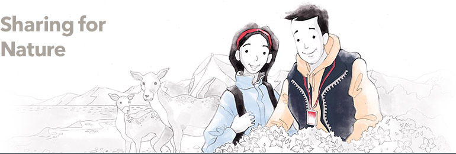
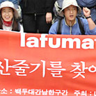
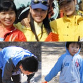

CSR
Sharing beyond boundaries of culture/arts/environmentLF defines sharing as love for people, society & culture, and nature. We are committed to carrying out sustainable CSR activities.


- Baekdudaegan Trail Hiking
- Baedudaegan is a mountain range that runs through most of the Korean Peninsula’s length from Baekdusan Mountain to Cheonwanbong Peak (1,915 m) of Jirisan Mountain. Although hiking across all the ridges is impossible because the country is divided into south and north, around 800 people of all walks of life hiked from Jirisan Mountain to Hyangrobong Peak, the highest peak in Korea. “The Records of Baekdudaegan Trail Hiking” was published to show the world the beautiful nature and environment.

- Flagship Species Protection Campaign
- Lafuma promoted “Flagship Species Protection Campaign” with the Korea National Park Service in June 2010. Flagship species refer to wild animals and plants that reflect ecological, geographical, and cultural features of certain regions. In other words, these species act as a flag informing the ecological environment of their habitat. The campaign was to protect flagship species in national parks that were closing down because of the neglect and indifference of the people. Lafuma donated some of the proceeds from the campaign’s sales of T-shirts to “National Park Flagship Species Protection Project”.
- Think Green Campaign
- HAZZYS carried out the Think Green Campaign in April 2010 for a whole month to alert the younger generation to the importance of environment protection.
HAZZYS introduced five T-shirts made of 100% organic cotton and some of the proceeds from the sales were donated to environmental groups. Celebrities, including Kim Bum, Kim Ji-seok, Ki Tae-young, Lee Soo-kyung, Kim Hyo-jin, and Min Hyo-rin, were selected as the spokespeople for the campaign to attract the younger generation.

- Nature-loving, Nature-protecting Event
- Lafuma promoted the “Nature-loving, Nature-protecting Event” on Sundays from 2004 to 2005 for the conservation of nature and mountains. Lafuma gave out biodegradable bin bags to hikers and climbers at mountains around the country.